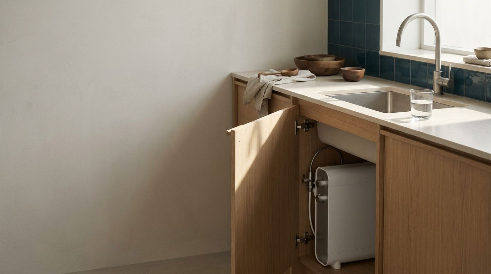
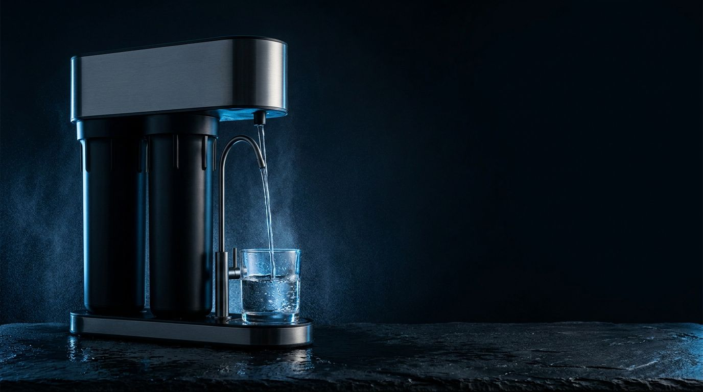
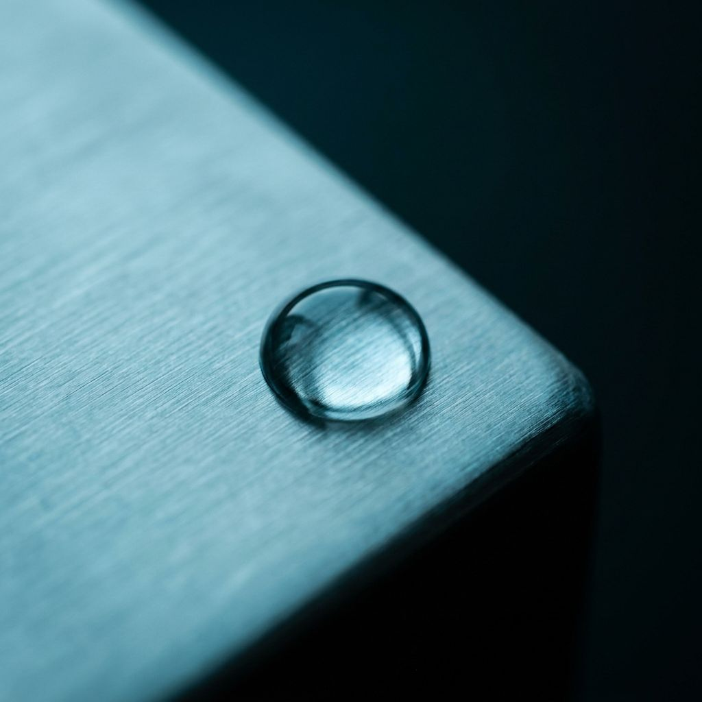
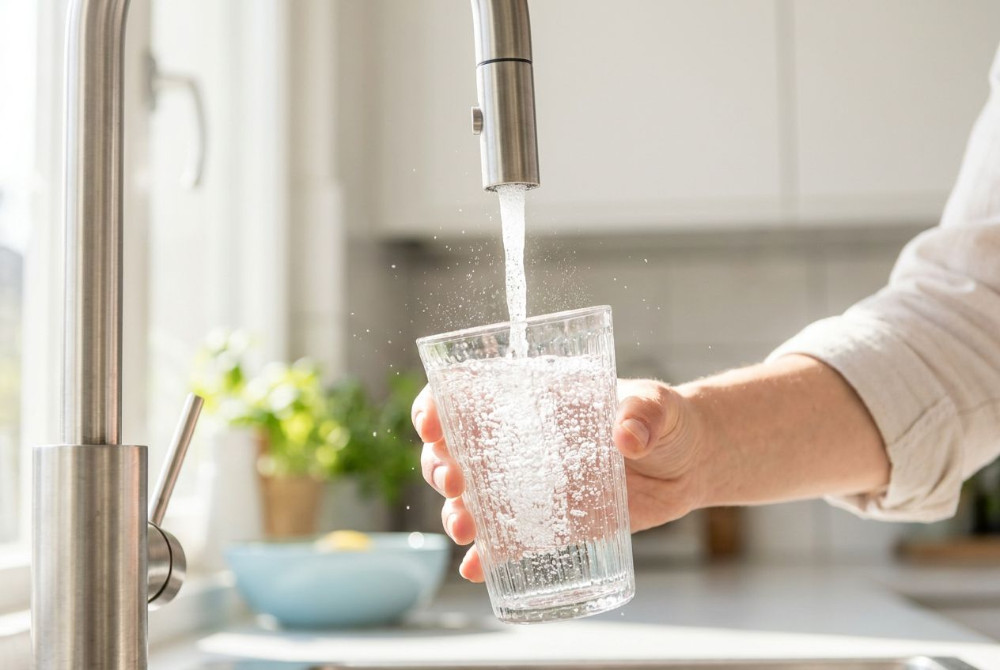

Ruppel Water · Прототипы
Это не финальный дизайн, а три разных характера бренда — с продуктовыми съёмками, сделанными под Ruppel Water. Скажи, какой ближе (или что смешать), и доведём до полного магазина.

Under-sink systems that disappear into your kitchen and stay for years.
Offices, cafés and hotels across Europe. VAT-invoiced, delivered from EU warehouses.
Filter reminders, spare parts and human support — included, not extra.
Кому подходит: если хотим «немецкое спокойствие» — бренд, который не кричит. Самый безопасный и самый европейский вариант.


Кому подходит: если целимся в «водный Bang & Olufsen» — максимальный статус и отстройка от всех «магазинов фильтров». Самый смелый по позиционированию.

One under-sink system replaces 1,800 plastic bottles a year. Pure water for drinking, coffee and cooking — from your own tap.
Build my system →Кому подходит: если фокус — быстрые B2C-продажи в Германии и рост через рекламу: смелый первый экран лучше конвертит холодный трафик.
Выбираешь направление (или миксуем: например, каркас Licht + продуктовая съёмка Tiefe) — и мы собираем полный магазин в этом стиле: каталог, карточки, B2B, языки.
Все фотографии на этой странице сгенерированы под бренд Ruppel Water — так будет выглядеть и контент магазина, без стоковых снимков.